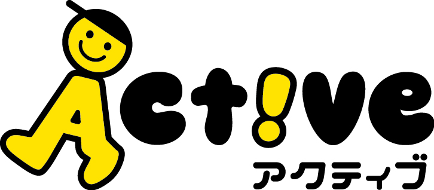

A.
・「もっと遊びたい！」「ゲームをもっとしたい！」「うるさい！！」など、子どもが泣いたり、怒ったりする時の対応
↓
〈 受け入れる 〉 〈 受け止める 〉
・「わかった！もっと遊ぼう！」 ・「もっと遊びたかったんだね！」
・「仕方ない。ゲームをしていいよ」 ・「まだ、ゲームをしたかったんだね」
・「うるさくしてごめんね」 ・「いやな気持ちになったんだね」
・子どもの気持ちを受け入れるのと、受け止めるのは違いがあります。
A.
・気持ちを受け止めることは、要求を受け入れる事とは違います。
「もっと遊びたかったね」「まだやりたかったよね」「イライラしちゃったんだね」のように、子どもの感じている気持ちを言葉にして伝える事が、気持ちを受け止める関わりと言えます。
・子どもの気持ちを大事にすることと、なんでも思い通りにしてあげることは違います。
A.
・大切なのは、子どもの気持ちを否定せずに理解しようとすることです。気持ちを受け止めてもらう経験を重ねる事で、子どもは少しづつ、自分の気持ちを理解し、相手に伝える力を育んでいきます。
・例えば、怒ってお友だちを叩いてしまったとき・・・
「嫌だったんだね」と気持ちは受け止めながら、「でも叩くことは良くないよ。言葉で伝えようね」と、行動のルールを伝え、気持ちと行動を分けて考えることが大事です。
A.
・気持ちを受け止めているのに、子どもが落ち着かないんだけど・・・ということもあります。
気持ちを受け止めることは、すぐに落ち着かせるための方法ではありません。
安心して、気持ちを表せる経験を積み重ねたり、好ましい行動を伝えたり、次はどうしたら良いかを一緒に考えたりしながら、少しずつ気持ちの伝え方や、行動の選び方を子どもと一緒に学んでいきましょう。
＊QandAの内容について、気になる方はお気軽にスッタフへお声かけください。